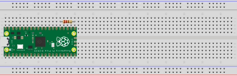
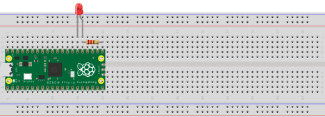
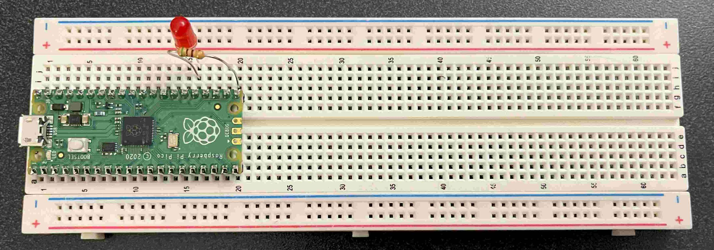

Blink External LED#
In the last lab, you worked with an internal LED that was built into the Pico itself. Now, we are going to work with the breadboard and other components of our kit in order to control an external LED.
Materials#
One LED of your choice
One resistor
One breadboard
Raspberry Pi Pico
Hardware#
Step 1: Connect the Raspberry Pi to the breadboard#
The Raspberry Pi Pico can emit voltage into the breadboard, allowing us to run voltage through a LED. This is why we must connect the Pico to the breadboard before we are able to light up our LED.
To add our Raspberry Pi Pico to the breadboard, have the raspberry symbol face up and insert the headers into the holes of the breadboard. We want to ensure that the Pico doesn’t touch the +/- rails (the holes next to the blue and red lines at the edge of the breadboard). Look at the image below for reference of what the setup should look like.

When we add our wires or LEDs to the breadboard, we need to know what pins of the Raspberry Pico we are connecting to. To see a diagram of the labels and types of each pin on the Raspberry Pico, check out this link.
Step 2: Connect a resistor to breadboard#
To find out what resistor value we need for this activity, refer to the (1.1) to calculate resistor and the learning materials to guide you through finding your desired resistor value.
Now, we need to put the given resistor into the breadboard. Use the link provided to the Pico Pin data sheet to find and pick a GP pin to use as our output-pin. This pin is what will be supplying voltage for our LED circuit.
Once you have picked an GP-pin, connect one end of the resistor into the row of the breadboard that contains that pin. The other end of the resistor should be connected to a different row of the breadboard.
For our example, we picked the GP16 pin which is located at the very bottom on the right side of the breadboard when the raspberry on the board is right-side up. Looking at the picture, this pin is in row 20, as such, one end of our resistor is in that row and the other is 4 rows up in row 16. Remember, this is simply an example, your breadboard might end up looking very different from ours and will still work out!

Step 3: Connect the LED to the breadboard#
First, every LED has a positive leg and a negative leg. The longer leg is the ‘positive leg’. This leg should be connected to where the voltage is coming from. The LED will only glow if the voltage is supplied to the longer/positive leg and flows out through the shorter, negative leg.
This means we must connect the longer leg of the LED so that the voltage from the resistor is flowing through the longer leg of the LED. This mean we need to connect the longer led to the row which contains our resistor and is not in the same row as the GP-pin that is outputting voltage. For our example, this row is row 16.
Then put the shorter leg of the LED into a different row than the longer leg. For our example, we connect it to row 15.

To finish off our circuit by leading the current to a ground pin. This provides an end to the circuit or a path for the electrical current to complete the return to the power source. Think about how batteries need to connect with a positive and negative side.
With the example and picture we provide, the pin in row 15 of the breadboard is a GND (ground) pin. If your LED’s shorter leg is not in the same row as a GND pin, use a wire to connect the row of LED’s shorter leg to a row that connects to a GND pin in the Raspberry Pico.
Here is an example of what your breadboard might look like after these steps:

Step 4: Connect the Raspberry Pico to the Computer#
Using the USB cable that we previously used to connect the Raspberry Pico to the computer, connect the Raspberry Pico to the computer. Now that everything is connected, you can start coding!
Code#
We are going to write a program that repeatedly toggles the LED on and off.
Step 1: Setting up our variables#
In order to be able to light the external LED, we need to be able to control the output pin we picked. Set up a variable which references the GP-pin you picked to output voltage. For our example, it was GP16 which means that we are changing pin 16.
Following our example, our code will look like this:
from machine import Pin
from utime import sleep
led = Pin(16, Pin.OUT)
Since our example uses pin GP16, the first argument we input is 16. This means if you are using pin GP20, your led variable will look like this: led = Pin(20, Pin.OUT).
Step 2: Toggling the LED on and off#
We want our code to repeatedly turn the LED on and off, so we are going to place our code inside a while loop where the condition is always true. As a result, the code will continuously run until the user stops it. You can stop running the code by pressing CTRL+C on your computer (CMD+C on Mac).
To turn the LED on and off, we can use one of the methods of our Pin object, the toggle() method. This method will flip the pin between outputting voltage and not outputting voltage. If the pin is outputting voltage, toggle() will stop the pin from outputting voltage and the LED will turn off.
while True:
led.toggle()
Step 3: Alternating LED on and off#
When we call toggle() back-to-back, the pin will switch states extremely fast. However, we want the blinking of our LED to be a bit more visible. To do this, we can use the sleep function in the time module, which will delay when the next piece of code starts running. We can add this after each call of toggle(). sleep(0.5) will delay our code for 0.5 seconds.
while True:
led.toggle()
sleep(0.5)
Now, try running your while loop. You should see the LED turning on and off.